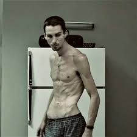
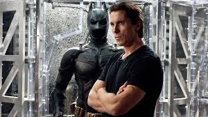
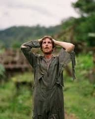
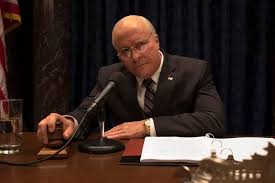
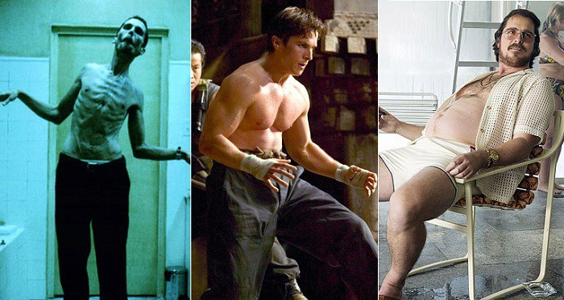

Bale is one of those actors who began his career at a very young age. He began acting in commercials at the age of 8. But one of the most difficult roles in his career was played by Bale in 2000 - the role of a Wall Street banker by day and a serial killer by night, Patrick Bateman, in the film adaptation of Bret Easton Ellis's novel "American Psycho". Preparing for the role, the actor challenged himself - to achieve the Olympic physique that his character has in 4 months. To do this, he not only spent hours in the solarium and on the treadmill, but also installed dental crowns to fully match the image.
In 2004, the role of Trevor Resnick, a man suffering from insomnia and losing weight, began. With the main role in "The Machinist" (2004), the actor's legendary transformations began. Minus 38 kilograms is an absolute record among all actors who have ever lost weight for their roles. With a height of 183 centimeters, Christian Bale weighed 53 kilograms.
Immediately after "The Machinist", Bale was offered to play Bruce Wayne in Christopher Nolan's film "Batman: Begins" (2005). For these roles, in just a few months, he had to gain + 27 kg before filming and another 18 during it. The funny thing was that the actor overdid it a little and could not fit into the Batman costume - he had to lose weight again.
A year later, the actor played in "Rescue Dawn" (2006) by Werner Herzog. To look like an exhausted prisoner in a prisoner of war camp, Bale lost 28 kg.
Three years later, Bale joins James Cameron's cult franchise "Terminator: Dark Fate" (2009) for the role of John Connor. Now he is a soldier, but already one of those who can save the whole world alone. Another year - and Christian Bale again needs to lose extreme weight for the role of cocaine addict Dickie Eklund in the sports drama "The Fighter" (2009). Later, the actor returns to the role of Bruce Wayne, playing in the final part of Christopher Nolan's trilogy about Batman. For the role, the actor restores his ideal physical shape. After that, he collaborates again with David Russell in "American Hustle" (2013). This is the first film in which the actor did not have to torture himself with diets and sports. To play Irwin Rosenfeld, Bale ate everything in a row, gained 30 extra pounds and grew a significant belly. For his role in the film "Power" (2018), Bale had to gain weight again. Christian played former US Vice President Dick Cheney. It is not known for certain how much he recovered. After that, the actor refused to suffer and mock his body.
"I always liked transformations - mental, physical. Sometimes it helps a lot to look in the mirror and not see yourself there - in the sense that it allows you to remove yourself from any character. And I'm glad I did it, but I think it's worth leaving this approach in the past," the actor said.
{kind=link}